Die einzelnen Abschnitte des Haithabu-Ringwalls in Bildern
(Die Bilder können jeweils durch Anklicken vergrößert dargestellt werden!)
Die Bilder folgen dem Wallverlauf vom nördlichen zum südlichen Wallende am Haddebyer Noor
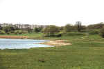 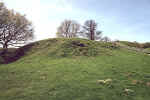 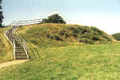 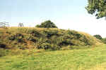 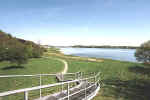 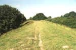 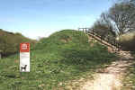 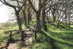 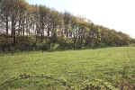 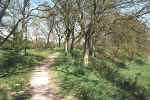 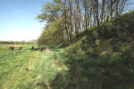 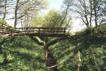 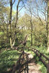 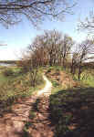 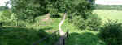 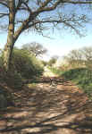 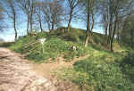 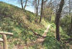 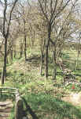 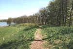 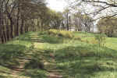 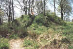